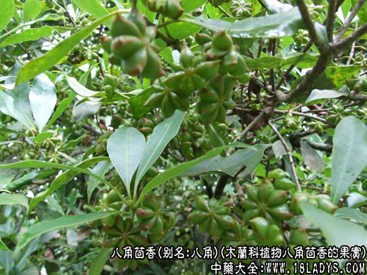
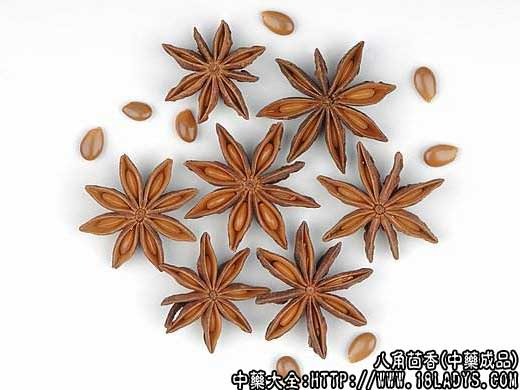
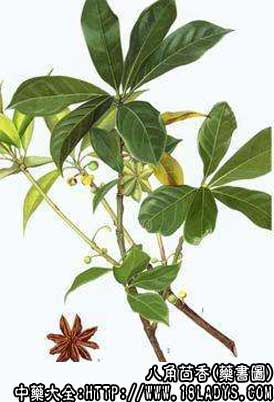

来源：八角茴香为木兰科植物八角茴香的果实。
产地：主产于广西、广东、云南、福建、台湾等地。冬季果实由绿变黄时采收。置沸水中略烫后干燥或直接干燥入药。
别名：八角、大茴香、八角大茴、舶茴香、八角珠、八角香。
性味：辛、甘，温。
归经：归肝、脾、肾经。
功效与作用：
1、散寒止痛用于寒性腹痛、睾丸偏坠等证。本品温而不燥，功能温肾散寒，解郁止痛。若治寒疝少腹作痛，可配沉香、乌药等药同用；若治睾丸偏坠，可与橘核、山植等药同用。
2、理气和胃用于胃寒呕吐、食少、院腹胀痛。本品味辛性散，有理气行滞、和中开胃之功。若用于胃寒纳差，可配生姜内服；若治脘腹胀痛，可单用酒煎内服。
此外；将本品炒热，布包温熨下腹部，治寒性腹痛有良效。
用法：3～6克，煎汤或入丸、散剂。外用适量。
使用注意：阴虚火旺者忌用。
经典引摘：
《新修本草》：主诸瘘、霍乱及蛇伤。
《本草纲目》：大茴香性热，多食伤目发疮，食料不宜过用。
现代研究：
1、成分：含挥发油(主要是茴香油)、脂肪油、蛋白质、树脂等。
2、药理抑菌作用：用醇提取物在体外对革兰氏阳性细菌之抑菌作用与青霉素钾盐20单位/毫升相似；对革兰氏阴性细菌的抑菌作用与硫酸链霉素50单位/毫升相似；对真菌的抑菌作用大于1%的苯甲酸及水杨酸。